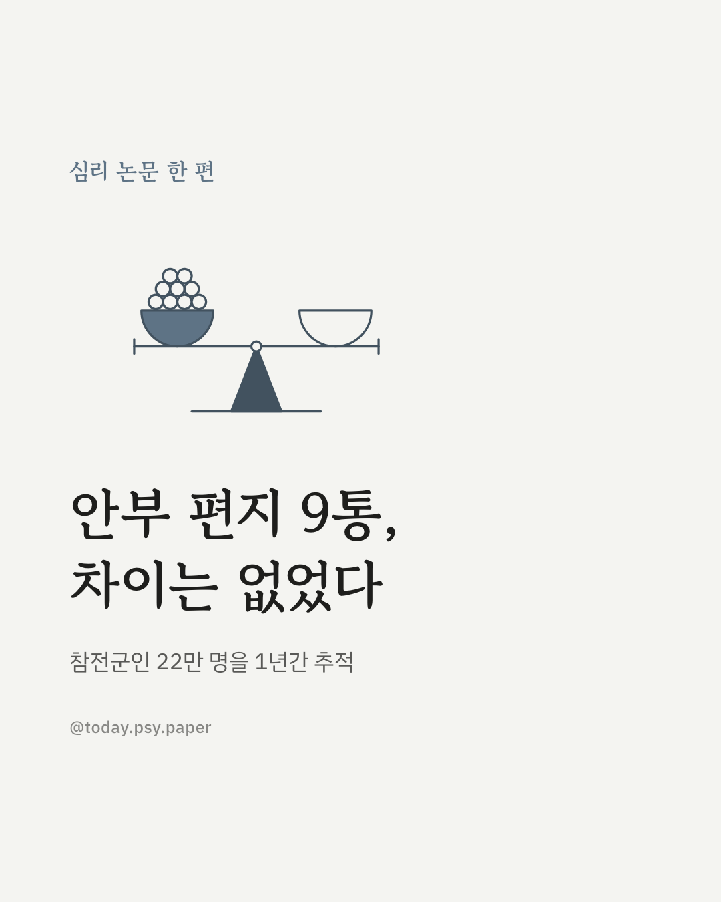
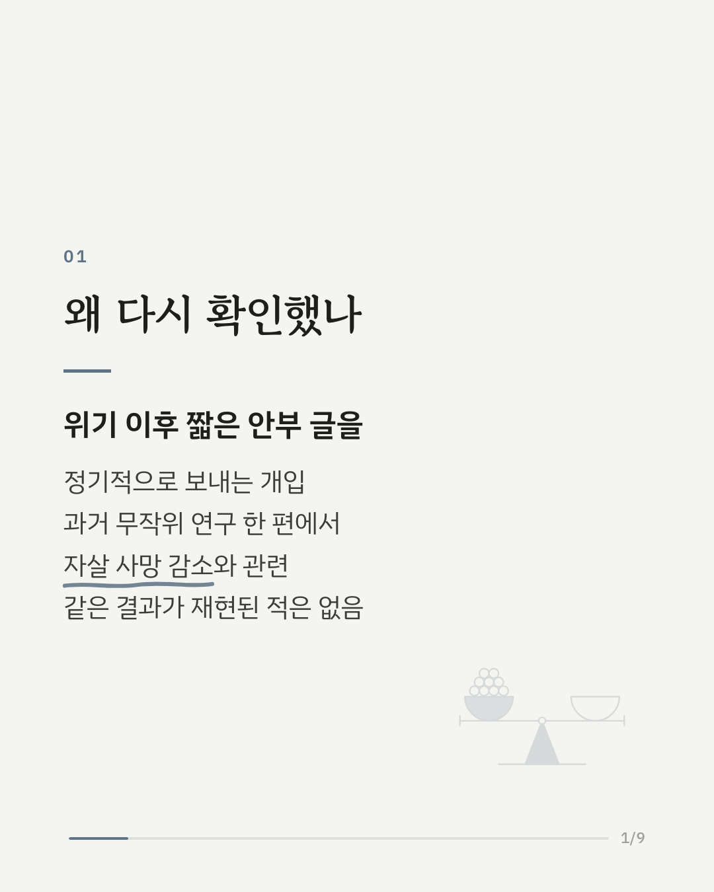
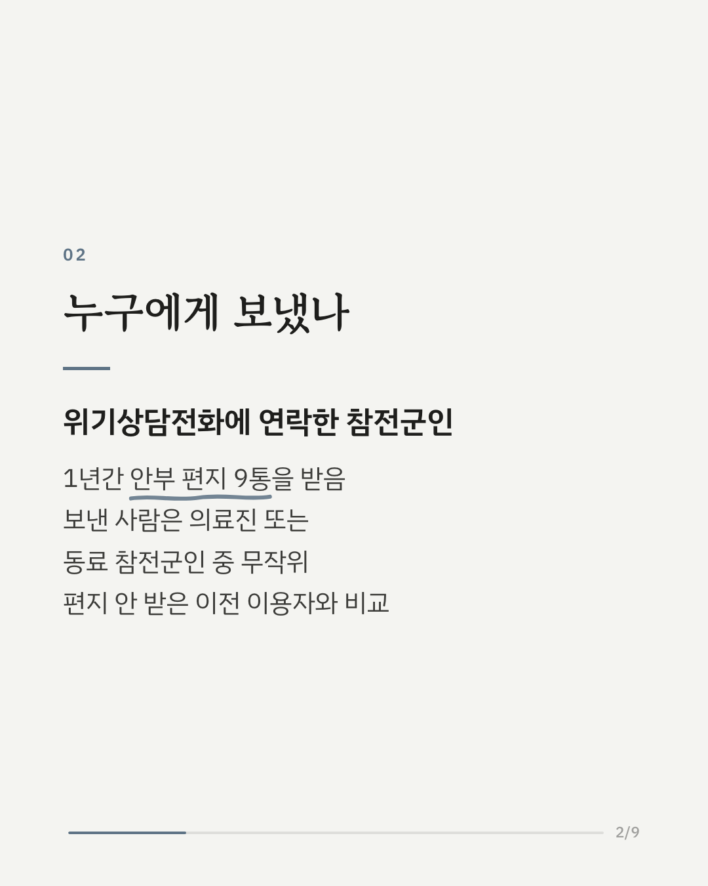
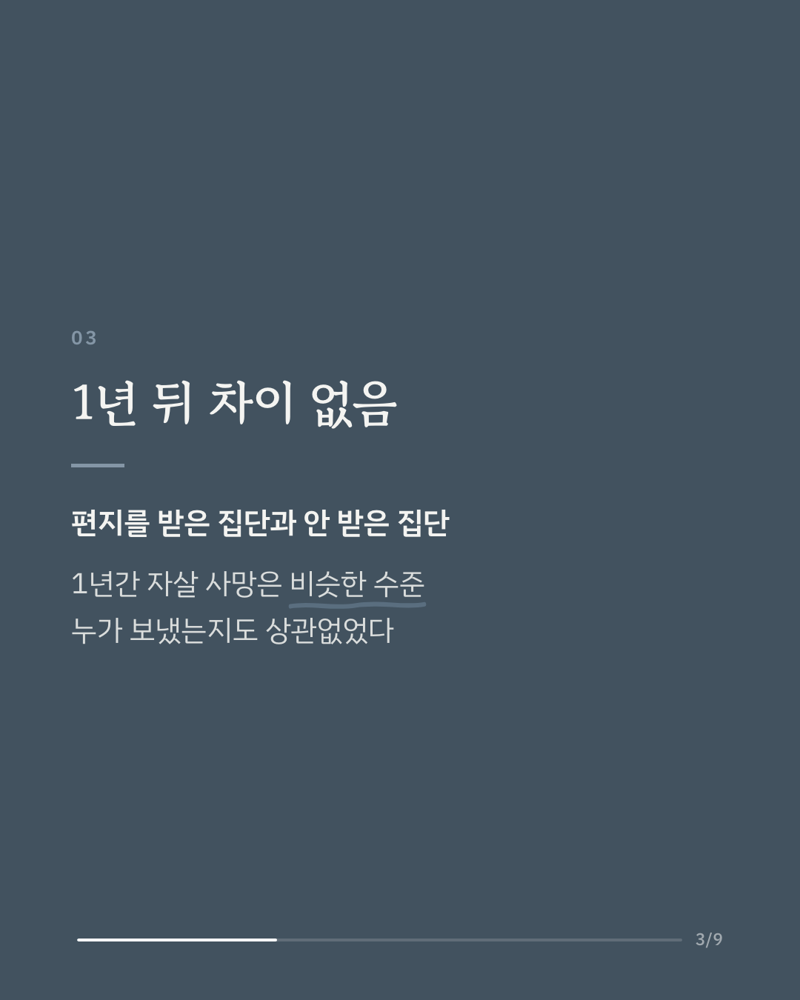
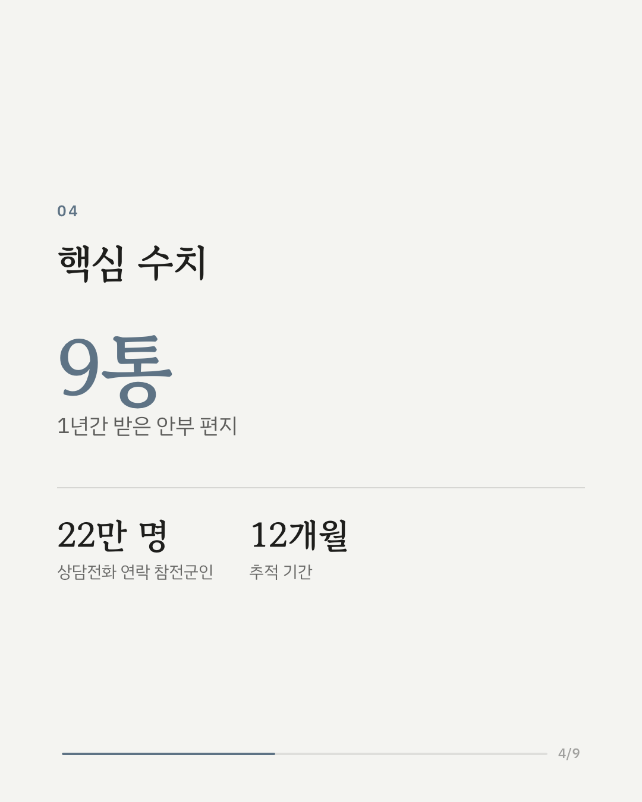
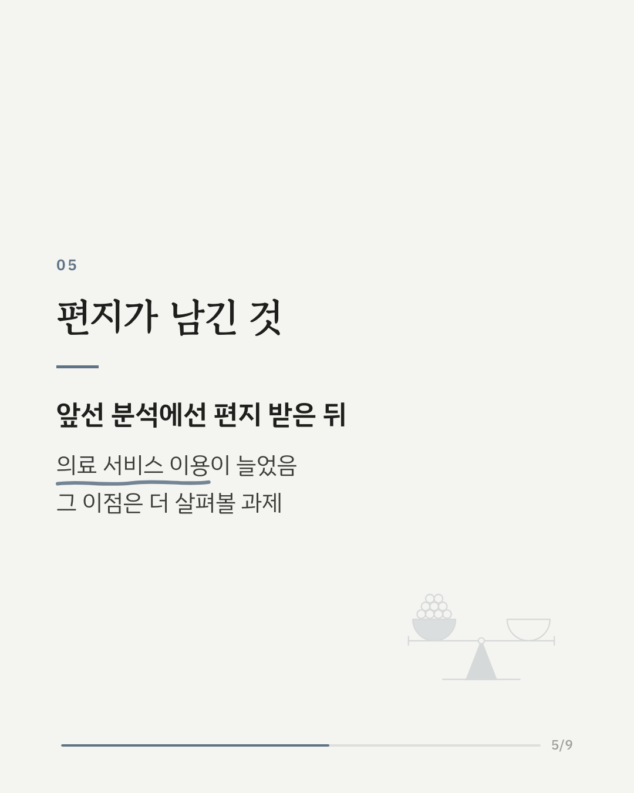
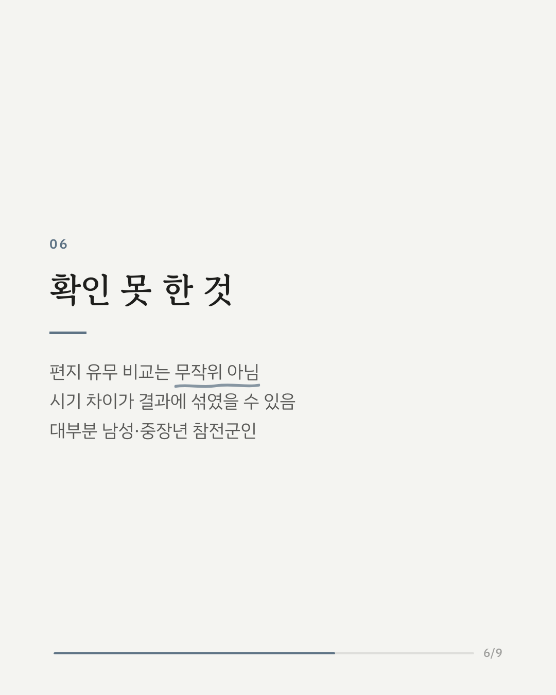
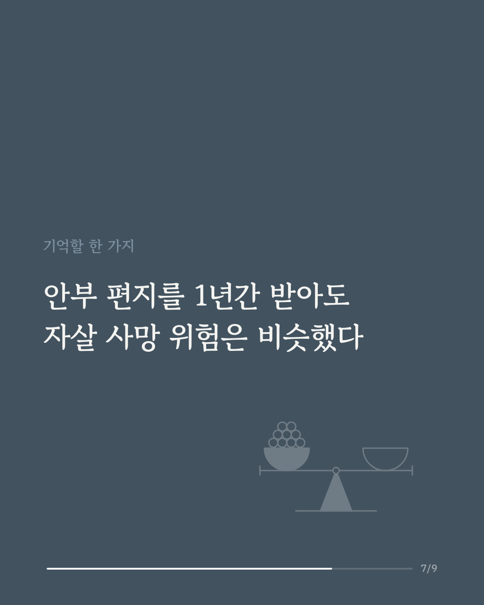
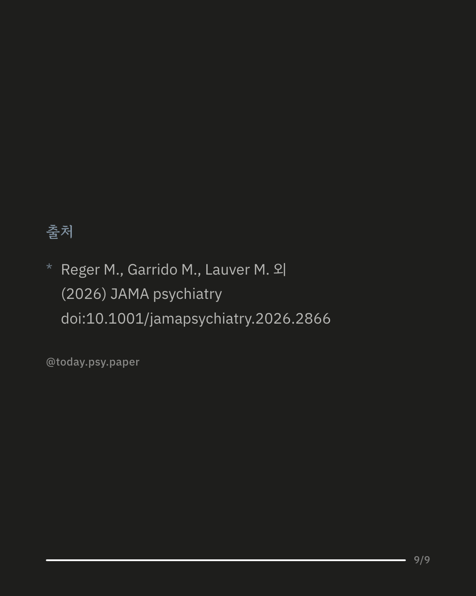

자살 예방 개입 가운데 '안부 편지'는 과거 무작위 연구에서 자살 사망 감소와 관련이 있었던 드문 방법입니다. 다만 그 결과가 다른 연구에서 다시 확인된 적은 없었습니다. 이번 연구는 미국 참전군인 위기상담전화에 연락한 약 22만 7천 명을 살폈습니다. 편지를 받은 참전군인 약 8만 8천 명은 1년 동안 안부 편지 9통을 받았고, 보낸 사람은 의료진과 동료 참전군인 중 무작위로 정해졌습니다. 1년간 자살 사망은 편지를 받지 않은 이전 이용자들과 비슷했고, 누가 편지를 보냈는지에 따른 차이도 없었습니다. 다만 편지를 받지 않은 비교 집단은 무작위로 나뉜 것이 아니라 이전 시기 이용자들이어서, 시기에 따른 차이가 결과에 섞였을 수 있습니다. 앞선 분석에서는 편지를 받은 뒤 의료 서비스 이용이 늘었다는 결과가 있었고, 연구진은 그 이점을 더 살펴볼 필요가 있다고 말합니다. 출처: JAMA Psychiatry (2026), 'Caring Letters and Suicide Mortality Among US Veterans Who Contacted the Veterans Crisis Line: A Prespecified Secondary Analysis' DOI: 10.1001/jamapsychiatry.2026.2866 힘든 마음이 들 때는 자살예방상담전화 109, 정신건강상담전화 1577-0199에서 도움을 받을 수 있습니다. #자살예방 #위기개입 #참전군인 #정신건강정보 #임상심리 #심리학연구 #논문리뷰 #정신건강
python3 publish.py 42873518